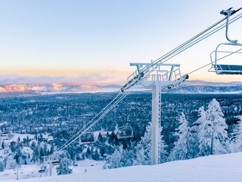
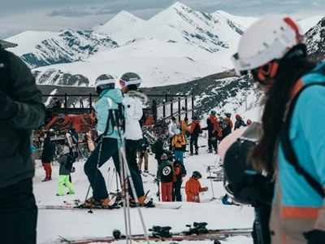
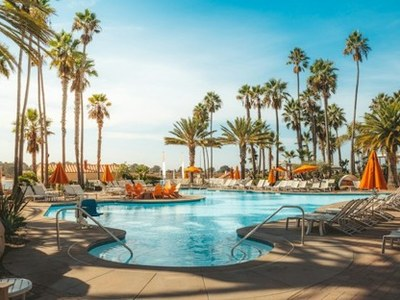
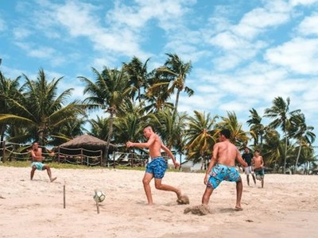
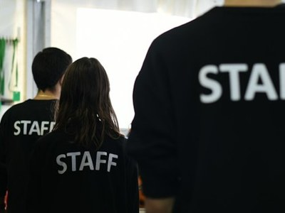
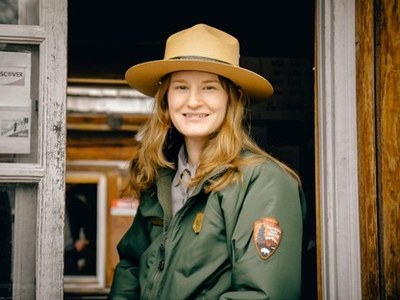
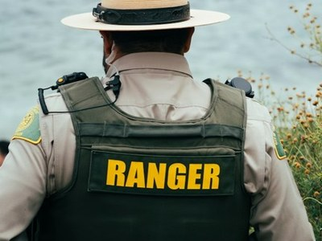
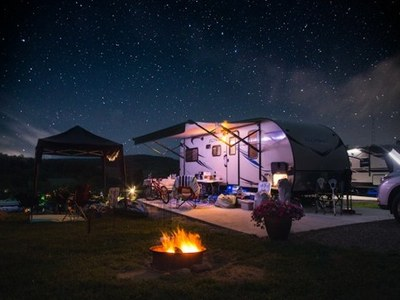

Ski Lift Operator
Load and unload guests on chairlifts and gondolas, run the lift controls, monitor safety, and help with falls and stops.
Pay: $16–$24/hr, plus a free season pass and perks.
Season: About November–April.
View Job Details
Certifications
None required to start. Employer training covers lift operation, evacuation and safety. CPR/First Aid may be provided.
Pros
- Free skiing or riding and often a pass for family
- Easy to get hired
- Outdoor mountain lifestyle
Cons
- Cold, wind and long standing shifts
- Repetitive work
- Seasonal with limited advancement
Housing and Schedule
Resort-owned employee housing is common ($400–$900/month) but limited. Usually 5 days a week, with early starts and weekend and holiday shifts.
Where to Apply
Resort career pages (Vail Resorts, Alterra, Aspen Snowmass, Boyne, Powdr), plus CoolWorks and Indeed.

Ski/Snowboard Rental Technician
Fit guests with skis, snowboards and boots, adjust bindings, and tune and maintain rental equipment.
Pay: $16–$24/hr, plus a free pass and rental or retail discounts.
Season: About November–April. Some shops are year-round with bike or summer gear.
View Job Details
Certifications
None required to start. Employers train on binding and boot fitting. Some push for manufacturer or binding-specific training.
Pros
- Indoor and warm
- Learn gear and tuning skills
- Free pass and discounts
Cons
- Very busy mornings and holiday rushes
- Repetitive fitting and cleanup
- Customer frustration with lines and sizing
Housing and Schedule
Employee housing at some resorts. Typically 5 days a week, with early morning and weekend or holiday shifts.
Where to Apply
Resort career pages and local ski shops, plus CoolWorks and Indeed.

Resort Lifeguard
Watch pools, hot tubs, water parks or beaches at resorts and hotels, enforce rules, and respond to emergencies.
Pay: $15–$24/hr.
Season: Summer for outdoor pools. Year-round for indoor or tropical resorts.
View Job Details
Certifications
Lifeguarding, First Aid and CPR/AED. Some resorts or states also require specific waterfront or water-park lifeguard certification.
Pros
- Resort perks like discounted stays, meals or amenities
- Often paid or reimbursed certification
- Good entry job for travel destinations
Cons
- Intense vigilance for long periods
- Sun and heat exposure
- Seasonal at many properties
Housing and Schedule
Employee housing is common at remote or seasonal resorts, often subsidized. Typically 30–40 hours a week, with weekend and holiday coverage.
Where to Apply
Resort and hotel career pages, water park operators (Great Wolf Lodge, Disney, Six Flags), and CoolWorks and Indeed.

Resort Activities Coordinator (guest activities)
Plan and run daily guest activities such as games, crafts, hikes, kids’ programs and evening events.
Pay: $15–$25/hr, or $32,000–$45,000/year in salaried roles.
Season: Peak seasons (summer, winter or holiday periods) depending on the resort, with some year-round positions.
View Job Details
Certifications
None universally required. CPR/First Aid, plus any activity-specific certifications (e.g., lifeguard, ropes, kayak). Background checks for kids’ programs.
Pros
- Creative, social and varied
- Resort perks and discounted stays
- Good pathway into hospitality and events
Cons
- Long days with weekend and holiday hours
- High-energy performance all day
- Modest pay for the workload
Housing and Schedule
Employee housing is common at resorts, often subsidized. Schedules are typically 5–6 days a week with day and evening shifts.
Where to Apply
Resort and hotel career pages (Club Med, Disney, Hyatt, dude ranches, national park lodges), plus CoolWorks, Indeed and Hcareers.
Theme Park Ride Operator
Run rides safely by operating controls, checking restraints, loading and unloading guests, and handling emergencies.
Pay: $15–$20/hr, with some premium parks higher.
Season: Peak in summer, with year-round operation at larger or warm-climate parks.
View Job Details
Certifications
None required beforehand. Employer training and ride-specific certification are provided. Some states require ride operator training or permits.
Pros
- Easy to get hired and fully trained on the job
- Free or discounted park admission and perks
- Fun, high-energy environment
Cons
- Heat, crowds and long standing shifts
- Repetitive tasks
- Guest complaints and tight safety procedures
Housing and Schedule
Housing is rare, though some large parks offer partner or subsidized housing. Typically 25–40 hours a week with weekend and holiday shifts.
Where to Apply
Park career pages (Disney, Universal, Six Flags, Cedar Fair, SeaWorld, Knott’s), plus Indeed.
Attractions Attendant (rentals, admissions, guest services)
Handle ticketing, rentals (bikes, kayaks, gear), check-in and guest questions at parks, museums and attractions.
Pay: $14–$20/hr.
Season: Mostly summer or peak travel seasons, with some year-round positions.
View Job Details
Certifications
None required. CPR/First Aid and customer-service or cash-handling training may be provided.
Pros
- Easy entry-level job
- Indoor or light-duty options
- Discounts or free admission
Cons
- Lower pay
- Repetitive tasks
- Dealing with lines and complaints
Housing and Schedule
Rarely included, though seasonal resort or park employers may help. Usually part-time or full-time shifts, with weekends and holidays busy.
Where to Apply
Park, museum, zoo and attraction career pages, concessioners such as Xanterra, Aramark and Delaware North, plus CoolWorks and Indeed.

Event Staff
Work concerts, festivals, sporting events and conventions, handling entry, crowd flow, setup and teardown, and guest assistance.
Pay: $15–$25/hr, with premium or overtime for large events.
Season: Varies by region. Summer is the peak for outdoor festivals, while indoor venues run year-round.
View Job Details
Certifications
None required in most cases. CPR/First Aid helps. Some roles need security guard licensing or alcohol-service certification (e.g., TIPS).
Pros
- Flexible gig-style scheduling
- Free access to events and good networking
- Easy to start
Cons
- Irregular and unpredictable hours
- Long shifts on your feet in all weather
- Crowd and safety challenges
Housing and Schedule
No housing. Shifts are per-event, usually evenings and weekends.
Where to Apply
Staffing agencies such as Contemporary Services Corporation (CSC), Allied Universal Event Services and Fieldhouse, venue and arena career pages, and Indeed.

Seasonal Park Ranger (Interpretation)
Lead programs, talks, guided walks and visitor-center services to teach visitors about a park’s nature and history.
Pay: Federal seasonal positions are typically GS-4 to GS-5, about $19–$26/hr depending on location and grade. State and local park pay is often lower.
Season: Mostly summer (roughly May–September), with some winter or desert-season roles.
View Job Details
Certifications
No single license is needed. CPR/First Aid, and often Wilderness First Aid or a driver’s license. Experience or coursework in education, natural resources or history helps. NAI’s Certified Interpretive Guide (CIG) is a common credential.
Pros
- Meaningful public-facing education work
- Government experience that helps with later federal hiring
- Beautiful workplaces
Cons
- Competitive hiring and strict deadlines
- Seasonal and short-term
- Remote or limited housing
Housing and Schedule
Government housing is available at some parks, usually for a modest rent deduction, but it is limited. Typically 40 hours a week, with weekends and holidays included.
Where to Apply
USAJOBS.gov (National Park Service, Forest Service, BLM), state park agency sites, and NAI.org and Indeed.

Seasonal Park Ranger (Protection / Law Enforcement)
Patrol parks, enforce regulations, respond to emergencies, and provide visitor protection and public safety.
Pay: Roughly GS-5 to GS-7 at the federal level, about $22–$32/hr depending on grade and locality pay. State and local pay varies.
Season: Mostly summer, with some year-round or shoulder-season roles.
View Job Details
Certifications
Federal law enforcement seasonals must complete a basic law enforcement academy (such as the NPS Seasonal Law Enforcement Training Program or FLETC), plus meet physical, medical, background and psychological requirements. First aid and EMT credentials help. A degree is helpful but not always required.
Pros
- Higher pay and a pathway to permanent federal law enforcement
- Real public-safety experience
- Strong benefits for permanent roles
Cons
- Significant up-front training cost and time (you often pay for the academy)
- Stressful, high-responsibility work
- Competitive and seasonal
Housing and Schedule
Government housing is sometimes available at remote parks. Usually 40-hour weeks with shift work, nights, weekends and holidays.
Where to Apply
USAJOBS.gov (NPS, USFS, BLM), state park and wildlife agencies, and academy-sponsoring programs such as seasonal law enforcement academies at community colleges.

Campground Host (unpaid volunteer)
Live at a campground and greet campers, explain rules, do light cleaning and maintenance, and serve as a friendly on-site presence.
Pay: Typically unpaid volunteer. In exchange you get a free campsite with hookups, and sometimes a small stipend, propane or utilities. A few concessioner roles are paid.
Season: Usually spring through fall (about 1–6 months), with some year-round hosts in warm regions.
View Job Details
Certifications
None required. CPR/First Aid is helpful. Most agencies require a background check, your own RV or trailer, and sometimes a basic orientation or training.
Pros
- Free lodging in scenic places
- Flexible commitment lengths
- Low barrier, good for retirees and RVers
Cons
- Unpaid, so you need your own income and vehicle or RV
- Commitment of roughly 20–30 hours a week in exchange
- Isolation and occasional difficult campers
Housing and Schedule
Free campsite with hookups, usually in your own RV or trailer. Typically 20–32 hours a week, with scheduled days off.
Where to Apply
Recreation.gov volunteer listings, Volunteer.gov, USFS, BLM and Army Corps of Engineers district pages, state park volunteer programs, and county and city parks. Also CoolWorks for paid host roles.